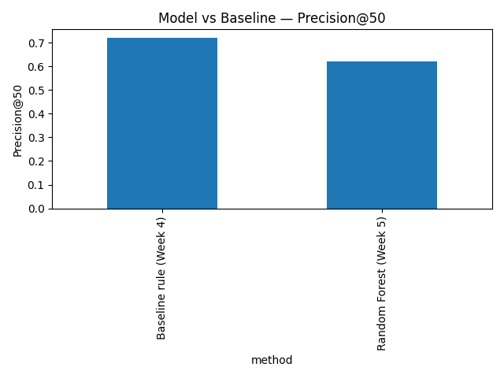
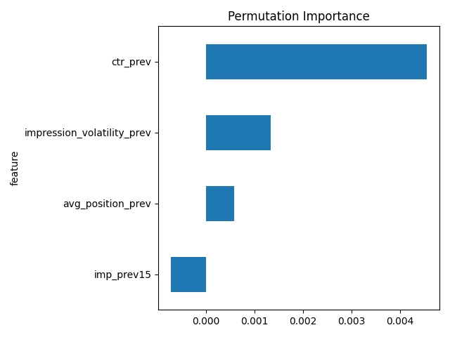

A client-grouped validation study — FlyRank ML Internship Capstone — Saad Ullah — September 2026
FlyRank's own content teams manage portfolios of thousands of pages per client, and every month editors must decide which handful of pages to review first. Refresh the wrong pages, and you waste a limited editorial cycle; miss the right ones, and a page that was quietly declining keeps losing visibility until the drop is expensive to reverse. Today that decision often rests on intuition or a simple hand-written rule. This capstone asks a narrower, testable version of that same problem: using only signals knowable before the outcome — prior impressions, position, CTR, and volatility — can a simple, honestly-validated model out-prioritize a transparent rule at flagging which content is actually declining? The answer, reported honestly in Section 4, is not a clean yes.
This study uses the fact_content_daily_performance table from the FlyRank internship warehouse release (Hugging Face, month=2026-03 partition) — a mid-panel month, deliberately chosen over the release's final month (June 2026), which is reserved as a sealed test window and was never used here.
gsc_data_available was false (roughly 63% of the raw panel — early-sync rows, not zero-traffic days) were dropped. GA4-based signals were not used, since under 5% of rows had GA4 sync this month. AI-referral and non-organic session columns were out of scope for this organic-search lane. The sealed final-month sample table was never touched.Label. An item is labeled "declining" if its impressions in the second half of March fell below 80% of its first-half impressions — an observed, within-month outcome rather than a product-defined flag.
Features (all computed from the first-half window only, so all predate the label period): prior impression volume, average search position, click-through rate, and impression volatility.
Baseline. A hand-written rule combining a "CTR below tier average" flag and a "quick win" flag (position 11–20 with meaningful volume), weighted 0.6/0.4.
Model. A Random Forest classifier (300 trees, max depth 6).
Validation design. Train/test split via GroupShuffleSplit, grouped by client, so no client's content appears in both sets — this prevents the model from learning a client's baseline traffic level rather than a generalizable decline pattern. Confirmed zero client overlap in every run.
Leakage audit. All four features were confirmed to derive only from the pre-label window; none correlated strongly with the label in isolation (max |r| = 0.086). A naive random (non-grouped) split was tested separately and scored Precision@50 = 0.88 — meaningfully higher than the grouped split's 0.62, demonstrating the leakage a naive split would have introduced and justifying the grouped design used throughout.
Comparing the model against the baseline on identical, client-grouped test splits, results varied across independent runs:
| Run | Baseline Precision@50 | Model Precision@50 |
|---|---|---|
| Week 5/6 evaluation | 0.24 | 0.66 |
| Capstone re-run | 0.72 | 0.62 |

Takeaway: the model's edge over the baseline reversed between two independently-run evaluations, showing the result is directional rather than settled.
Permutation importance across runs consistently ranked click-through rate as the strongest (though still weak) individual signal, ahead of impression volatility, average position, and prior impression volume.

Takeaway: no single feature carries strong signal on its own, consistent with earlier findings that individual pre-decision signals have AUC near 0.5.
Error analysis (Week 6) found the model conservative: it produced zero confident false positives but a meaningful number of confident false negatives, concentrated on established pages with real volume and reasonable position that still declined — suggesting the current feature set is missing a freshness or query-mix signal, rather than indicating a modeling error.
The resulting decision-support queue ranks content items by model score, with a reason code attached to each recommendation: model_flagged_decline_risk, model_flagged_low_ctr, or quick_win_page1_push. Actions map to confidence thresholds: review_now, consider, or monitor.
Human review is required before acting on any recommendation:
Monitoring / retrain triggers: a meaningful drop in GSC data-sync coverage below the ~37% observed here, a sharp shift in the underlying decline base rate month-over-month, or a Precision@50 that falls below roughly 0.55 on a fresh month's held-out clients should all trigger re-validation before the queue is trusted further.
All notebooks, data-contract audits, leakage checks, and metrics receipts referenced in this paper are available in the accompanying repository: